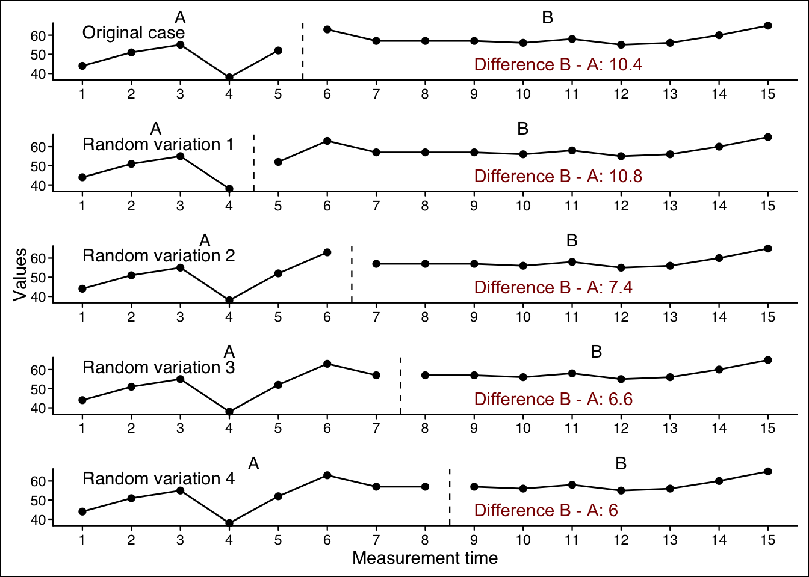
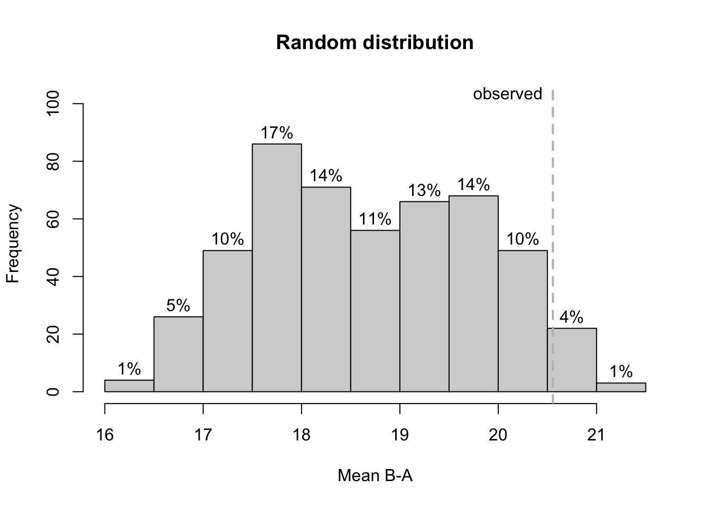
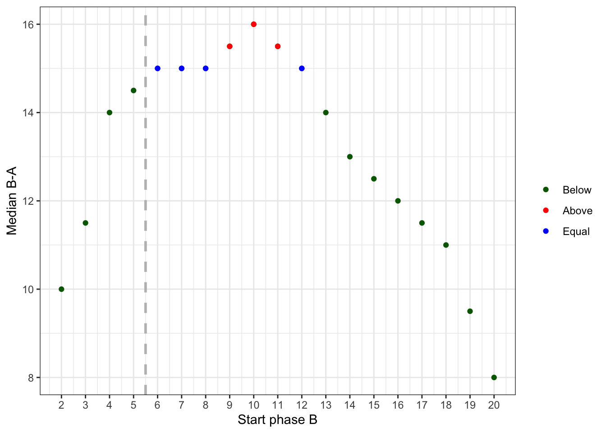

14 Randomization tests
The rand_test function call:
rand_test(
data,
dvar,
pvar,
statistic = c(“Mean B-A”, “Mean A-B”, “Median B-A”, “Median A-B”, “Mean |A-B|”, “Median |A-B|”, “SMD hedges”, “SMD glass”, “W-test”, “T-test”, “NAP”, “NAP decreasing”, “Slope B-A”, “Slope A-B”),
statistic_function = NULL,
number = 500,
complete = FALSE,
limit = 5,
startpoints = NA,
exclude.equal = FALSE,
phases = c(1, 2),
graph = FALSE,
output = NULL,
seed = NULL
)
The rand_test function computes a randomization test for single or multiple baseline single-case data. The function is based on an algorithm from the SCRT package (Bulté & Onghena, 2008, 2009), but has been rewritten and extended.
The basic idea of a randomization test is to think counterfactually: “Assuming that the phase had no effect on the measured data, what would be the difference between the phases of my case if I had started phase B at a different time? Given the possible phase differences under the assumption that phase had no effect, how likely are the actual phase differences of the original case?”
Therefore, a number of new cases are generated with a random start for each phase. This means that these new cases have the same data as the original case, but different starting points for each phase. A specific statistic (e.g., the mean difference between Phase A and Phase B data) is now calculated for each new case. When enough random cases have been generated, we also generate a series of new statistics (e.g., mean differences). The statistic for the original case is now compared to these new statistic values. The percentile of the original statistic within the new generated statistic values is the probability of the original statistic assuming a random distribution of starting points for each phase. This percentile is returned as the p-value in the randomization test analyses.
14.1 Arguments of the rand_test() function
The statistics argument defines the statistics on which the phase comparison is based. The following comparisons can be made:
| Mean A-B | The difference between the mean of Phase A and the mean of Phase B. This is appropriate if a decrease in scores is expected for Phase B. |
| Mean B-A | The difference between the mean of Phase B and the mean of Phase A. This is appropriate if a increase in scores is expected for Phase B. |
| Mean |A-B| | The absolute value of the difference between the means of Phases A and B. |
| Median A-B | The same as Mean A-B, but based on the median. |
| Median B-A | The same as Mean B-A, but based on the median. |
| Median |A-B| | The same as Mean |A-B|, but based on the median. |
| Some further experimental statistics are also available: | |
| SMD hedges | The standardized difference between phases as Hedge’s g. |
| SMD glass | The standardized difference between phases as Glass’s delta. |
| NAP | The Nonoverlap of all pairs. |
| NAP decreasing | The Nonoverlap of all pairs assuming decreasing values in phase B. |
| Slope B-A | The difference of a linear slope line of the phases. |
| Slope A-B | The difference of a linear slope line of the phases expecting a decreasing effect in phase B. |
| W-test | Calculates a Wilcoxon test and takes the W statistic. |
| T-test | Calculates a T-test test and takes the t statistic. |
Further argument are
| Argument | What it does … |
|---|---|
| number | Sample size of the randomization distribution. The exactness of the p-value can not exceed 1/number (i.e., number = 100 results in p-values with an exactness of one percent). Default is number = 500. For faster processing use number = 100. For more precise p-values set number = 1000. |
| complete | If TRUE, the distribution is based on a complete permutation of all possible starting combinations. This setting overwrites the number Argument. The default setting is FALSE. |
| limit | Minimal number of data points per phase in the sample. The first number refers to the A-phase and the second to the B-phase (e.g., limit = c(5, 3)). If only one number is given, this number is applied to both phases. Default is limit = 5. |
| startpoints | Alternative to the limit-parameter, startpoints exactly defines the possible start points of phase B (e.g., startpoints = 4:9 restricts the phase B start points to measurements 4 to 9. startpoints overwrite the limit-parameter. |
| exclude.equal | If set to FALSE, which is the default, random distribution values equal to the observed distribution are counted as null-hypothesis conform. That is, they decrease the probability of rejecting the null-hypothesis (increase the p-value). exclude.equal should be set to TRUE if you analyse one single-case design (not a multiple baseline data set) to reach a sufficient power. But be aware, that it increases the chance of an alpha-error. |
14.2 Example
res <- rand_test(exampleAB)
resRandomization Test
Combined test for three cases.
Comparing phase 1 against phase 2
Statistic: Mean B-A
Minimal length of each phase: A = 5 , B = 5
Observed statistic = 20.55556
Distribution based on a random sample of all 1331 possible combinations.
n = 500
M = 18.61574
SD = 1.17416
Min = 16.06667
Max = 21.35421
Probability of an equal or higher value than the observed statistic:
p = 0.036
Shapiro-Wilk Normality Test: W = 0.970; p = 0.000 (Hypothesis of normality rejected)
Probabilty of observed statistic based on the assumption of normality:
z = 1.6521, p = 0.0493 (single sided)14.3 Visuaization
The plot_rand() function plots a distribution of the random sample against the observed statistic:
plot_rand(res)
A more sophisticated histogram is available from the scplot package since version 0.4.1.
scplot(res)
Another visualization is available since scplot version 0.5.1 for a randomization test with one case. It gives you an overview of the respective statistic for each available startpoint of phase B.
rand_test(
byHeart2011$`Lisa (Turkish)`,
statistic = "Median B-A",
limit = 1,
complete = TRUE) |>
scplot(type = "xy")
14.4 Providing a custom function
If you want to experiment around with new statistics for the randomization test, you can add your own analyses functions.
Use the statistic_function argument to provide your own function in a list. This list must have an element named statistic with a function that takes two arguments a and b and returns a single numeric value. For example, list(statistic = function(a, b) mean(a) - mean(b)). The second element of the list is named aggregate which takes a function with one numeric argument that returns a numeric argument. This function is used to aggregate the values of a multiple case design. If you do not provide this element, the default function(x) sum(x) / length(x). is used. The third optional argument is name which provides a name for your custom function.
Here is an example that implements the PND statistic and uses the median to aggregate the PNDs in a multiple case study.
new_statistic <- list(
statistic = function(a, b) sum(b > max(a), na.rm = TRUE) / sum(!is.na(b)),
aggregate = function(x) median(x),
name = "PND"
)
rand_test(Huber2014, statistic_function = new_statistic)Randomization Test
Combined test for four cases.
Comparing phase 1 against phase 2
Statistic: user defined function PND
Minimal length of each phase: A = 5 , B = 5
Observed statistic = 0.07575758
Distribution based on a random sample of all 2513840 possible combinations.
n = 500
M = 0.01777683
SD = 0.04370528
Min = 0
Max = 0.3802817
Probability of an equal or higher value than the observed statistic:
p = 0.11
Shapiro-Wilk Normality Test: W = 0.437; p = 0.000 (Hypothesis of normality rejected)
Probabilty of observed statistic based on the assumption of normality:
z = 1.3266, p = 0.0923 (single sided)